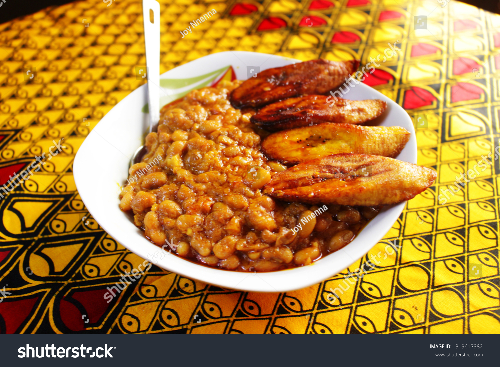

Beans and Dodo

DESCRIPTION
Beans and dodo is a delightful and hearty meal that combines tender cooked beans with flavorful fried plantains. The dish originates from Nigerian cuisine but is enjoyed in various parts of Africa and beyond.
INGREDIENTS
- 1 cup of dry beans (black-eyed peas, pinto beans, or any variety of choice)
- 5 ripe plantains (or more if you love em like I do!)
- 1 onion, finely chopped
- 2 cloves of garlic, minced
- 1 red bell pepper, diced
- 1 teaspoon of thyme
- 1 teaspoon of paprika
- 1 teaspoon of curry powder
- 1 teaspoon of bouillon powder or cube (optional)
- Salt, to taste
- Water
- Cooking oil (vegetable oil or palm oil)
STEPS
Preparing the beans
- . Rinse the dry beans under cold water to remove any dirt or debris. Soak the beans in water overnight or for at least 6 hours. This step helps to soften the beans and reduce the cooking time.
- After soaking, drain the beans and rinse them again.
- In a large pot, add the beans and cover them with water. The water level should be about 2 inches above the beans.
- Bring the pot to a boil and let it boil for 5 minutes. Then, reduce the heat to a simmer.
- Cover the pot partially with a lid and let the beans cook for about 1 to 1.5 hours, or until they are tender. Check the beans occasionally and add more water if necessary to prevent them from drying out.
- Once the beans are tender, add salt to taste and cook for an additional 5 minutes. Then, remove from heat and set aside.
Preparing the dodo(plantain)
- Peel the plantains and cut them into diagonal slices about 1/2 inch thick.
- Heat some cooking oil in a frying pan or skillet over medium heat.
- When the oil is hot, add the plantain slices in a single layer and fry them until they turn golden brown on both sides. This usually takes about 2-3 minutes per side.
- Once the plantains are cooked, transfer them to a plate lined with paper towels to absorb any excess oil. Set aside.
Preparing the Beans and Dodo Stew
- In a separate pan, heat some cooking oil over medium heat.
- Add the chopped onions and minced garlic to the pan and sauté until they become translucent and fragrant.
- Add the diced red bell pepper and cook for a few more minutes until it softens.
- Stir in the thyme, paprika, curry powder, and bouillon powder or cube (if using). Mix well to combine the flavors.
- Add the cooked beans (along with any remaining liquid) to the pan with the onion and pepper mixture. Stir everything together.
- Allow the stew to simmer for about 10-15 minutes, stirring occasionally, to allow the flavors to meld together. If the stew becomes too thick, you can add a little water to adjust the consistency.
- Taste the stew and add more salt or seasoning if needed.
- Serve the beans and dodo stew hot, accompanied by the fried plantains.
Enjoy your delicious meal!
CONCLUSION
As easy as it seems, it could get a little confusing. But, not to worry, as you can always come back for here references
How about you check out how to make the best Fried Rice.
Better still, learn how to cook Afang Soup like you're from the Efik or Ibibio land.
Go back to Home Page